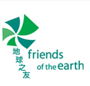

地球之友
目的與使命
香港地球之友於1983年註冊成為慈善團體，是本地主要的環保團體之一
目的
健康及可持續發展的環境 你我同享
使命
- 身為環保先鋒，香港地球之友出謀獻策
- 以推動政府、企業和社會，共建可持續發展並公平合理的環保政策、營商方式和生活形態為己任，全力保護香港及鄰近地區的環境
活動與服務
最近活動
- 公開活動
- Green! O Camp
- 知慳惜電
- 水樂行
- 綠樂無窮在屋邨
- 植樹護源
- Green Living Campus
- 放駕一天
- 綠野先鋒
- 惜飲惜食
- Earth Partner
- 回收
- 回收計劃
- 學校/社區
- 專題講座
- 參觀/體驗活動
- 工作坊
主要工作：
通過各種調查研究、環境教育工作、社區活動及環保運動，致力改善本港及內地的生活質素及環境
- 促請有關當局制訂相關的法規
- 推動公眾
就業與義工
目前職位空缺
- 項目主任（社區教育）
- 資訊科技支援主任（短期三個月合約）
- 數碼市場主任
義工
本會日後將透過電郵招募已登記之義工參與各項服務。 所有參與服務之義工必須首先加入本會，尚未成為義工者請按 登記成為義工聯絡資料
- 電話： (852) 2528 5588
- 傳真： (852) 2529 2777
- 電郵： foehk@foe.org.hk
- 網站： http://www.foe.org.hk/c/
- 地址： 香港屈臣道二號海景大廈A座13樓1301至1302室
- 開放時間： 9:30a.m.- 6:00p.m. （星期一至星期五）
- 星期六、星期日及公眾假期休息
其他
會籍類別
- 終生會員
- 一般會員 登記成為會員
捐款辦法
- 一次性捐款：
- 信用卡或PayPal
- 繳費靈： 透過繳費靈直接繳款，香港地球之友的商戶編號為 9352
- 劃線支票： 支票擡頭請寫「香港地球之友慈善有限公司」並郵寄至 香港地球之友 香港北角屈臣道2號 海景大廈A座13樓1301至1302室
- 銀行存款： 將款項直接存入香港地球之友的銀行戶口：「香港地球之友慈善有限公司」
匯豐銀行戶口賬戶號： 567-320437-001 - 透過7-11便利店現金捐款： 您可透過全港 7-11便利店 以現金捐款予香港地球之友（最低捐款額為港幣一百元）
- 每月捐款： 捐款表格
- 遺產捐贈
網站截圖：
回到最頂